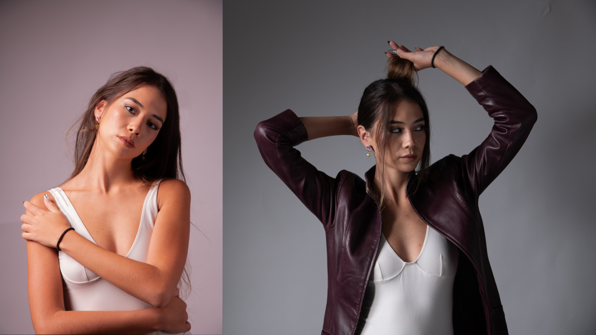

Natalia Gammer
What I like about these two frames is how much Natalia changes the composition with her arms. In the first, she draws them close to her body. In the second, the open jacket and raised elbows give her more room in the frame. Putting the pictures together makes that gesture the first thing I notice.

Sarita Lopez
With Sarita, the pairing comes from the difference in light. In one frame, the pattern of her top follows the curve of her raised arms. In the other, her dark clothing falls into the background and the light picks out her face. I kept both in the edit because they give you two ways to look at the same person.

Michael Kors · Tabletop study
The product mockup brings the series back to the tabletop brief. In the portraits, Natalia and Sarita could change a frame with a gesture. Working with a still subject put those decisions in my hands: the placement of the object, the direction of the light and the space around it.